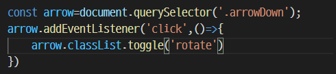
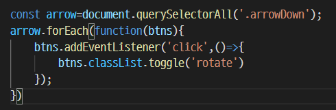
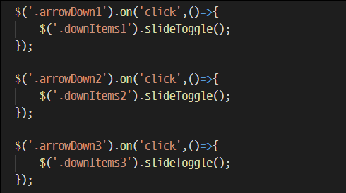

toggle
2022-04-14
toggle. on/off의 기능을 한번에 적용할 수 있는 메서드이다. 해당 블로그를 개설하고 자잘한 효과를 설정하면서 이 toggle 매서드 덕을 보았다.
스크립트에 에러가 계속 뜨다가 어찌어찌 에러없이 실행 될 때는 너무 기쁘다.
우당탕탕 toggle 적용하기
- toggle 적용을 하나만 하는 경우
- 
- 아래를 향해 있는 화살표를 클릭하면 화살표가 180도로 돌아서 위를 향하게 하고 싶었다.
- 움직임의 값은 .5초로 설정하고, rotate라는 클래스를 css에 만들어 놓았다.
- querySelector로 arrowDown 클래스를 찾아서 상수로 변환한 다음, 클릭하면 rotate클래스를 붙이고 뗄 수 있게 했다.
- 고마운 toggle. add와 remove 따로 작성할 필요가 없다.
- 그런데...
- toggle 적용을 하는 배열이 있는 경우
- 
- 만약에 화살표가 여러개라면 1번의 방법으로 스크립트를 짜게 되면 제일 처음 나타나는 화살표에만 rotate 클래스가 적용된다.
- 그래서 배열의 값으로 적용을 해 주어야 하는데, 그 때 필요한 것이 querySelectorAll
- 배열의 값이기 때문에 forEach구문을 사용하였다. 이렇게 하면 완성!
- 아직 해결 못했다..
- 
- 화살표를 클릭하면 아래로 하위 콘텐츠가 나왔으면 좋겠는데 어떻게 해야 할 지 잘 모르겠어서 일단은 각각 클래스명을 다르게 하여 jQuery로 작성하였다.
- 위에서 아래로 내려오는 움직임을 주기 위해 slideToggle을 사용.
- 분명 자바스크립트로 한번에 할 수 있을텐데.. 나중에 꼭 찾아봐야지